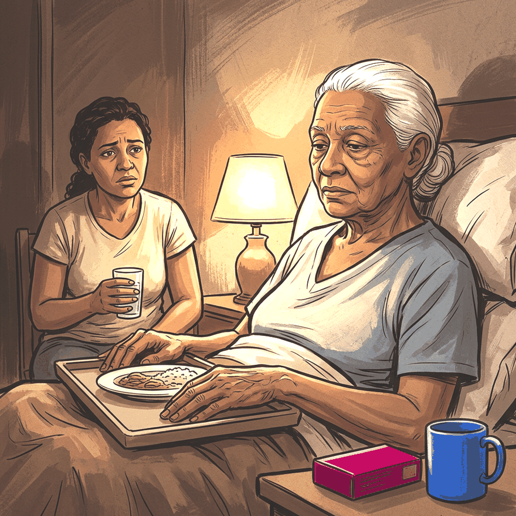

Consulta rápida à beira do leito
Condutas, doses e interações.
Referências da aula · 8
- Bruera E, Kuehn N, Miller MJ, Selmser P, Macmillan K. The Edmonton Symptom Assessment System (ESAS): a simple method for the assessment of palliative care patients. J Palliat Care. 1991;7(2):6-9. PMID 1714502.PubMed
- Bower JE, Lacchetti C, Alici Y, et al. Management of fatigue in adult survivors of cancer: ASCO–Society for Integrative Oncology guideline update. J Clin Oncol. 2024;42(20):2456-87. PMID 38754041. doi:10.1200/JCO.24.00541.PubMedDOI
- Fearon K, Strasser F, Anker SD, et al. Definition and classification of cancer cachexia: an international consensus. Lancet Oncol. 2011;12(5):489-95. PMID 21296615. doi:10.1016/S1470-2045(10)70218-7.PubMedDOI
- Muscaritoli M, Arends J, Bachmann P, et al. ESPEN practical guideline: clinical nutrition in cancer. Clin Nutr. 2021;40(5):2898-913. PMID 33946039. doi:10.1016/j.clnu.2021.02.005.PubMedDOI
- 2023 American Geriatrics Society Beers Criteria Update Expert Panel. American Geriatrics Society 2023 updated AGS Beers Criteria for potentially inappropriate medication use in older adults. J Am Geriatr Soc. 2023;71(7):2052-81. PMID 37139824. doi:10.1111/jgs.18372.PubMedDOI
- O'Mahony D, Cherubini A, Guiteras AR, et al. STOPP/START criteria for potentially inappropriate prescribing in older people: version 3. Eur Geriatr Med. 2023;14(4):625-32. PMID 37256475. doi:10.1007/s41999-023-00777-y.PubMedDOI
- Twycross R, Wilcock A, Howard P. Palliative Care Formulary. 8th ed. Nottingham: palliativedrugs.com; 2022.
- Academia Nacional de Cuidados Paliativos. Manual de Cuidados Paliativos. 2ª ed. Porto Alegre: Meridional; 2012.
Animação da aula
O acento magenta puxa para o vermelho em pulso lento, roda uma vez e congela. Pronta para entrar no slide.

Documentos oficiais
Leis e publicações do Ministério da Saúde sobre o cuidado da pessoa idosa, de acesso livre.
Abrir os documentos